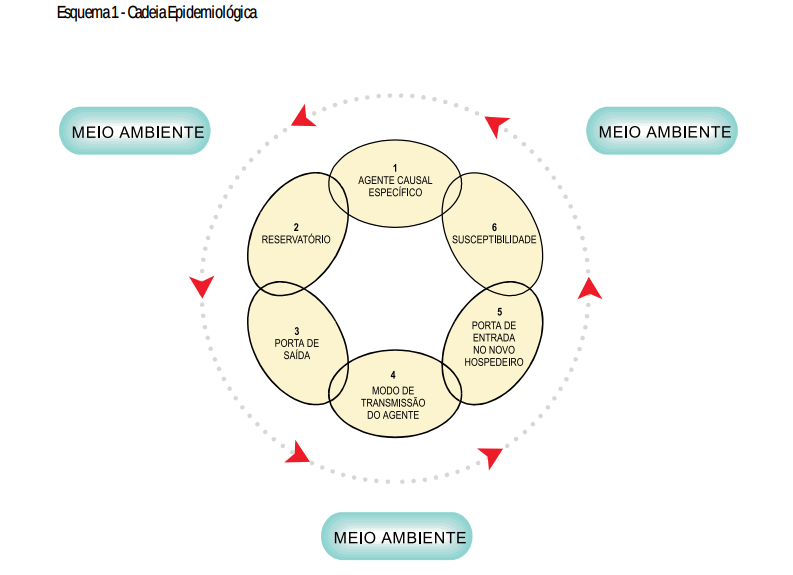
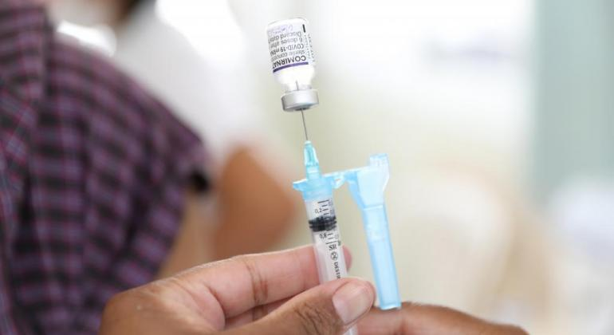

Uma doença transmissível, ou infecciosa, é uma enfermidade causada por microrganismos capazes de se multiplicar no organismo humano. O termo transmissível se dá pela capacidade desses agentes serem transmitidos de uma pessoa para outra, direta ou indiretamente.
Os agentes causadores podem ser vírus (HIV), bactérias (tuberculose), fungo (candidíase) ou parasitas (doença de chagas).
Devido a transmissão ocorrer de várias maneiras, como contato direto entre humanos, com animais, água ou alimentos contaminados, ar, objetos, fluídos corporais, entre outros, a abordagem para prevenção é, e deve, ser moldável de acordo com o patógeno e sua propagação.

Combate a doenças transmissíveis

Uma das estratégias mais eficazes é a vacinação.
O Brasil, através do PNI (Programa Nacional de Imunização), possui o maior e mais abrangente plano de imunização da população. Com a capacidade de imunizar milhões de pessoas por dia e oferecendo 19 imunizantes, recebeu reconhecimento da OPAS devido a grande efetividade das ações.
Questões de higiene pessoal, com ações básicas como lavagem das mãos e alimentos antes do consumo, até a ampliação do saneamento básico são fundamentais para a contenção de várias enfermidades. Esse último é o principal fator para proliferação de doenças como malária e dengue.
O uso de estruturas maiores e bem consolidadas nos permite aliar multiações para a erradicação de doenças, como ocorreu com a varíola. A junção de vigilância epidemiológica, cooperação internacional e planos de emergência, permitiu que, em um cenário de mundo dividido, esforços fossem direcionados para além de fronteiras em prol da primeira doença erradicada na história.
O Brasil, através do PNI (Programa Nacional de Imunização), possui o maior e mais abrangente plano de imunização da população. Com a capacidade de imunizar milhões de pessoas por dia e oferecendo 19 imunizantes, recebeu reconhecimento da OPAS devido a grande efetividade das ações.
Questões de higiene pessoal, com ações básicas como lavagem das mãos e alimentos antes do consumo, até a ampliação do saneamento básico são fundamentais para a contenção de várias enfermidades. Esse último é o principal fator para proliferação de doenças como malária e dengue.
O uso de estruturas maiores e bem consolidadas nos permite aliar multiações para a erradicação de doenças, como ocorreu com a varíola. A junção de vigilância epidemiológica, cooperação internacional e planos de emergência, permitiu que, em um cenário de mundo dividido, esforços fossem direcionados para além de fronteiras em prol da primeira doença erradicada na história.